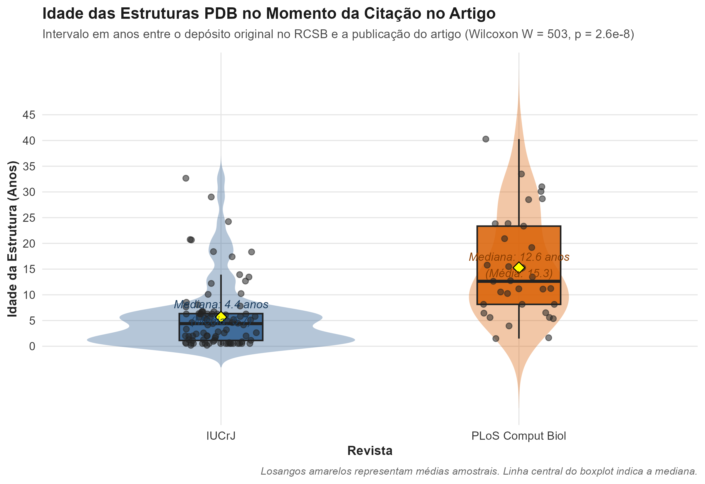
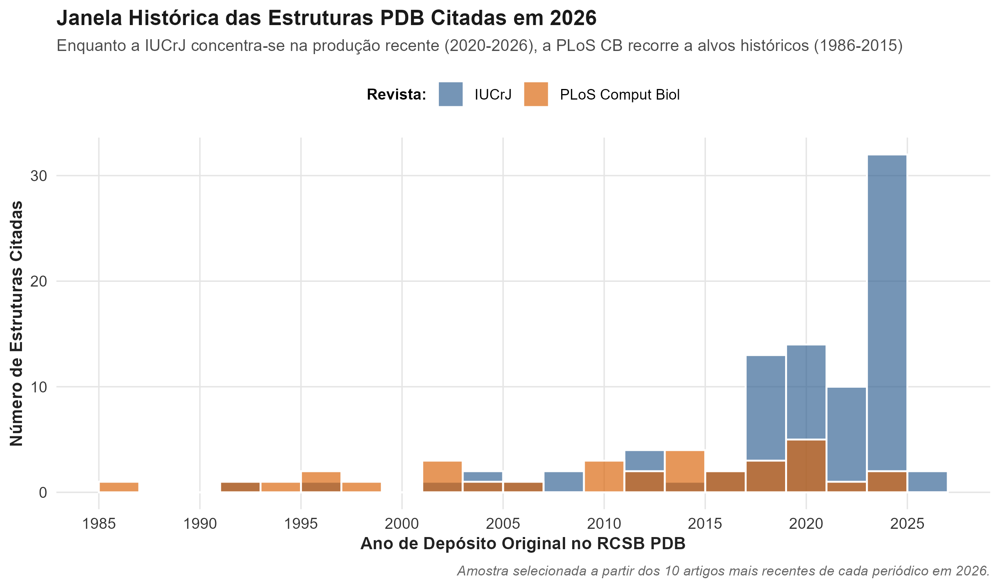
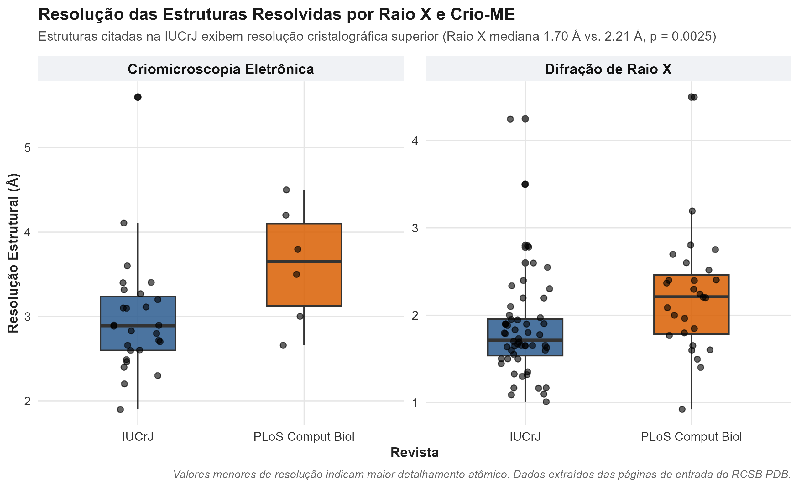
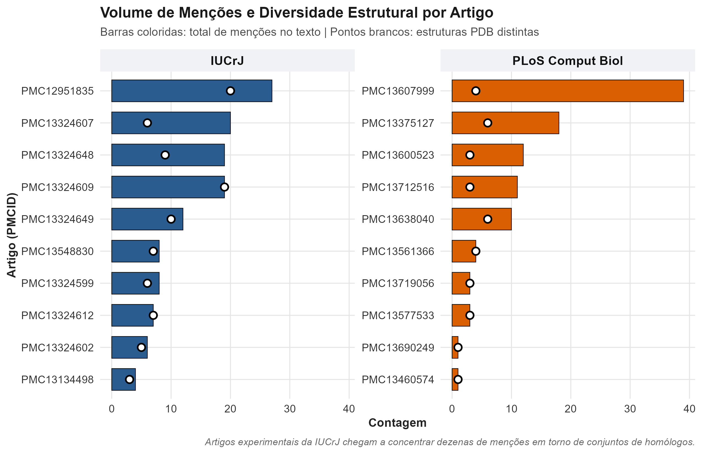

Do artigo ao banco de dados: estruturas do PDB citadas na literatura recente
Análise comparativa quantitativa entre periódicos experimentais (IUCrJ) e computacionais (PLoS Computational Biology) em 2026
Resumo
O Protein Data Bank (PDB) armazena mais de 220 mil registros de estruturas biológicas (BURLEY et al., 2023, 2025), mas a consulta à base isolada reflete apenas o histórico de depósitos, sem indicar o uso real dessas coordenadas pela comunidade científica. Para mapear como a pesquisa utiliza essas estruturas, implementamos um pipeline em R que extraiu citações aos códigos PDB nos 20 artigos de acesso aberto mais recentes publicados em 2026 nos periódicos IUCrJ (cristalografia experimental) e PLoS Computational Biology (modelagem computacional) por meio da API da Europe PMC (FERGUSON et al., 2021; ROSONOVSKI et al., 2024).
Foram capturadas 126 menções a 122 estruturas PDB únicas válidas, enriquecidas por meio de raspagem web no RCSB PDB e organizadas em banco relacional PostgreSQL em Terceira Forma Normal (SILBERSCHATZ; KORTH; SUDARSHAN, 2020; VILCHES, 2026). Os resultados indicam especialização funcional entre as revistas: enquanto a IUCrJ concentra novos depósitos (34,1% de dados inéditos, resolução de raios X mediana de 1,70 Å e idade mediana de 4,4 anos), a PLoS Computational Biology reutiliza exclusivamente dados prévios da literatura (0% de novos depósitos, 100% de reuso e idade mediana de 12,6 anos, com depósitos datados de 1986).
1. Introdução
O Protein Data Bank (PDB) reúne coordenadas tridimensionais de macromoléculas biológicas determinadas experimentalmente desde 1971 (BERMAN et al., 2000). O acervo central administrado pelo consórcio mundial ultrapassou recentemente 220 mil entradas experimentais consolidadas e integradas a predições de inteligência artificial (BURLEY et al., 2023, 2025). No entanto, a base de dados isolada registra apenas o histórico cumulativo de depósitos, sem indicar o uso efetivo ou a frequência com que essas estruturas são mobilizadas pela comunidade científica contemporânea. Enquanto certas coordenadas permanecem sem novas citações após o depósito original, estruturas canônicas continuam servindo de base contínua para simulações de dinâmica molecular, ensaios de atracamento ligante-receptor (*docking*) e calibração de modelos biofísicos.
A literatura primária fornece o registro mais fidedigno desse consumo. Quando autores citam um código PDB no corpo de um artigo, estabelecem uma relação direta e funcional entre aquela estrutura e uma investigação biológica em curso (FERGUSON et al., 2021; ROSONOVSKI et al., 2024).
Periódicos científicos respondem a culturas metodológicas distintas:
- Periódicos experimentais (ex.: IUCrJ): concentram trabalhos dedicados à determinação de novas estruturas atômicas por difração de raios X e criomicroscopia eletrônica (Crio-ME) (DE LA CRUZ; ENG, 2023). Seus artigos operam predominantemente como geradores primários de coordenadas inéditas.
- Periódicos computacionais (ex.: PLoS Computational Biology): dedicam-se a modelos teóricos, simulações biofísicas, biologia de sistemas e predições computacionais (ABRAMSON et al., 2024; VARADI et al., 2024). Seus artigos atuam majoritariamente como usuários secundários de coordenadas pré-existentes.
O objetivo deste trabalho foi implementar um pipeline automatizado em linguagem R para extrair códigos PDB citados em artigos de acesso aberto publicados em 2026 em ambos os periódicos. O sistema recupera metadados do RCSB PDB por raspagem web, persiste as informações em um banco relacional PostgreSQL normalizado em Terceira Forma Normal (3FN) e compara quantitativamente as taxas de depósito, a idade dos dados, os métodos biofísicos e as proteínas mais exploradas pela comunidade.
2. Metodologia e engenharia de dados
O pipeline foi estruturado em módulos independentes em linguagem R (WICKHAM et al., 2019):
[Europe PMC API] -> [AWS S3 Bucket (PMC-OA)] -> [Mineração Regex nos PDFs]
│
▼
[Banco PostgreSQL (Schema pdb)] <- [Tidyverse / DBI] <- [Scraping RCSB PDB]2.1. Seleção dos artigos
O script consulta a API REST da Europe PMC (ROSONOVSKI et al., 2024), aplicando filtros de acesso aberto (`OPEN_ACCESS: y`) e referências estruturais (`ACCESSION_TYPE: pdb`). Para cada registro, o script consulta o endpoint de anotações automatizadas (`/annotations`) da Europe PMC (FERGUSON et al., 2021). A amostragem fixou os 10 primeiros artigos de cada periódico que continham pelo menos 3 códigos PDB citados no texto, totalizando 20 manuscritos analisados.
2.2. Obtenção dos textos completos
Como o portal web do PubMed Central limita requisições automatizadas diretas, os textos completos foram obtidos do repositório público em nuvem do PMC Open Access na AWS S3 (`pmc-oa-opendata.s3.amazonaws.com`). O script identifica o arquivo PDF principal de cada artigo, ignorando materiais suplementares, e faz o download com taxa controlada de 2 segundos entre requisições.
2.3. Mineração de texto e extração de códigos PDB
O padrão alfanumérico clássico de um código PDB é formado por 4 caracteres: um dígito inicial entre 1 e 9 seguido por 3 letras ou algarismos (BERMAN et al., 2000). A aplicação direta de expressões regulares puras acarreta falsos positivos com anos, equipamentos laboratoriais e unidades de medida. Para mitigar o ruído, adotaram-se filtros de contexto: exigência de ao menos um caractere alfabético nas 3 últimas posições e presença de palavras-chave estruturais (*PDB, accession, entry, coordinates*) na mesma linha ou até 6 linhas acima no PDF.
2.4. Enriquecimento de metadados no RCSB PDB
Cada código catalogado foi consultado no portal do RCSB PDB com a biblioteca `rvest` (BURLEY et al., 2023, 2025). Foram extraídas informações da estrutura (método, resolução, data de depósito, peso molecular, cadeias únicas e DOI do artigo de depósito) e de cada entidade proteica (nome da molécula, organismo, código UniProt e classificação enzimática EC). A coleta manteve pausas de 2 segundos entre páginas e registrou entradas não liberadas ou com erro 404 em arquivo de auditoria.
2.5. Modelagem relacional e carga SQL
O schema `pdb` foi normalizado em Terceira Forma Normal (3FN), adotando as convenções da disciplina com prefixos `ref_` para tabelas de domínio e `tab_` para tabelas de dados (SILBERSCHATZ; KORTH; SUDARSHAN, 2020; VILCHES, 2026). Relações N:M entre entidades macromoleculares e identificadores UniProt foram implementadas por meio da tabela associativa `tab_entidade_uniprot`.
3. Resultados e discussão
3.1. Taxa de depósito inédito versus reaproveitamento
Para determinar se uma estrutura mencionada foi solucionada pelos autores do próprio artigo, comparamos o DOI do manuscrito ao DOI registrado na entrada do PDB (`LOWER(doi_artigo) == LOWER(doi_estrutura)`).
| Periódico | Artigos | Menções | Estruturas Únicas | Depositadas pelo Artigo | Reaproveitadas | Taxa de Depósito |
|---|---|---|---|---|---|---|
| IUCrJ | 10 | 92 | 89 | 30 | 58 | 34,1% |
| PLoS Comput Biol | 10 | 34 | 33 | 0 | 33 | 0,0% |

3.2. Idade das estruturas citadas e inércia computacional
A diferença temporal entre a data de publicação do artigo em 2026 e a data de depósito da estrutura no PDB indica o horizonte temporal de cada periódico:
| Periódico | Média | Mediana | Mínimo | Máximo | Depósito Mais Antigo |
|---|---|---|---|---|---|
| IUCrJ | 5,66 anos | 4,40 anos | 0,19 anos | 32,7 anos | 02/07/1993 |
| PLoS Comput Biol | 15,33 anos | 12,63 anos | 1,49 anos | 40,3 anos | 31/03/1986 |


3.3. Métodos biofísicos e resolução atômica

3.4. Proteínas e alvos moleculares frequentes (UniProt)

G3G192) lidera com 11 estruturas citadas em 2 artigos, refletindo a pesquisa em resistência bacteriana a antimicrobianos (HUSNA et al., 2023). Outros alvos incluem a integrina alfa-M (P11215), L-asparaginase 2 (P00805) e a glicoproteína Spike do SARS-CoV-2 (P0DTC2).
3.5. Dispersão de menções por artigo

4. Conclusões
O trabalho implementou o pipeline proposto para a disciplina FCM 2026, cobrindo:
- Coleta automatizada de publicações via API REST e repositório AWS S3 (FERGUSON et al., 2021; ROSONOVSKI et al., 2024);
- Extração de termos com heurísticas de contexto para mitigação de falsos positivos;
- Raspagem incremental com taxa controlada no RCSB PDB (BURLEY et al., 2023, 2025);
- Persistência relacional em PostgreSQL normalizada em Terceira Forma Normal (SILBERSCHATZ; KORTH; SUDARSHAN, 2020; VILCHES, 2026);
- Geração de figuras em alta resolução e testes inferenciais de hipótese (AGRESTI, 2018).
Os dados comprovam a divisão funcional: periódicos experimentais (IUCrJ) expandem o acervo primário do PDB com novas estruturas de alta resolução recente, enquanto periódicos computacionais (PLoS Computational Biology) atuam na reutilização de dados consolidados como referência para calibração de modelos biofísicos.
O repositório completo com scripts e dados está disponível em: https://github.com/paivacaetano126/TrabalhoPDB.